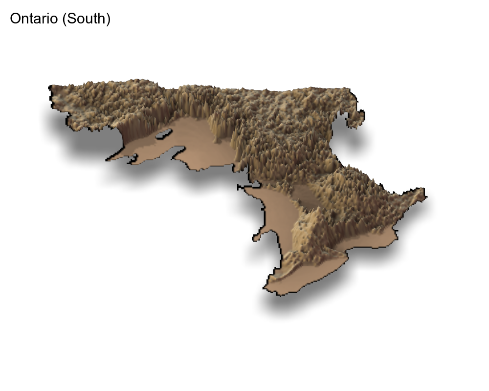
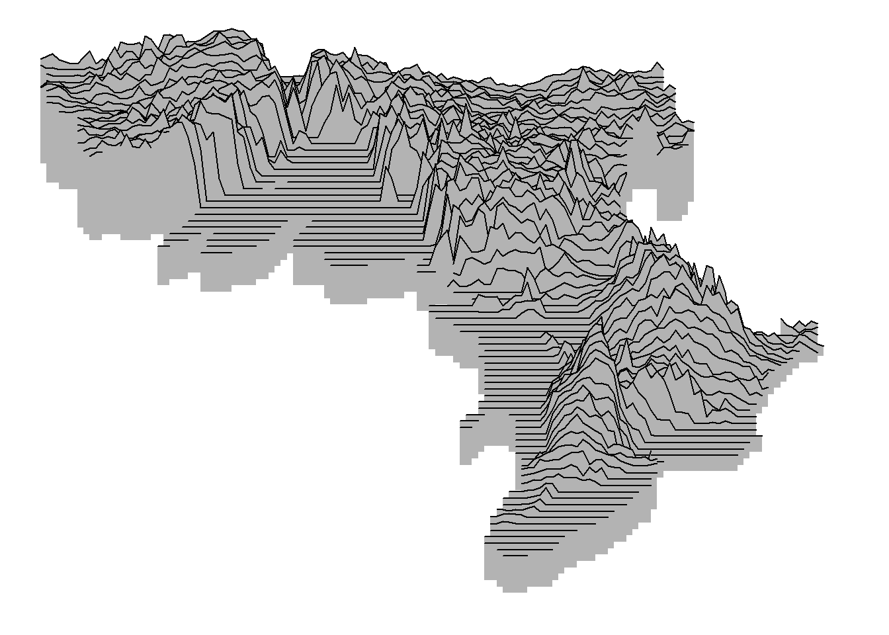
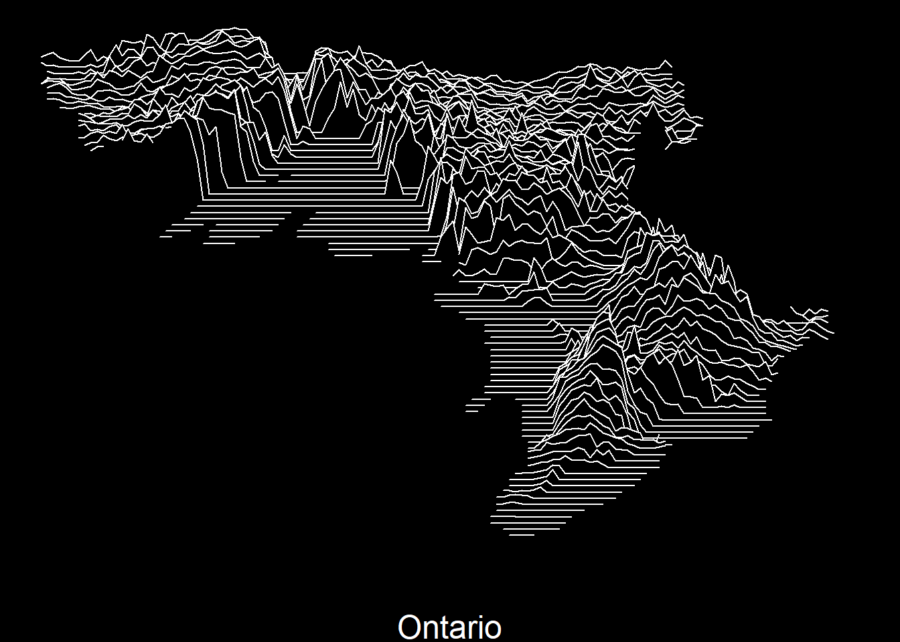
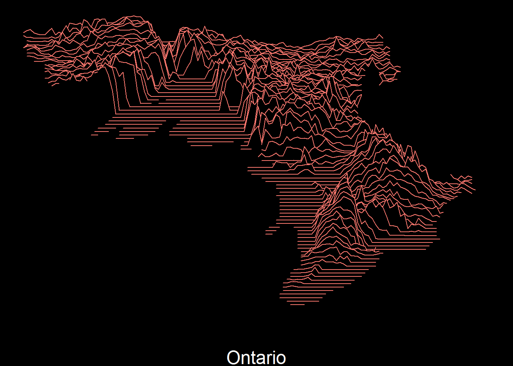
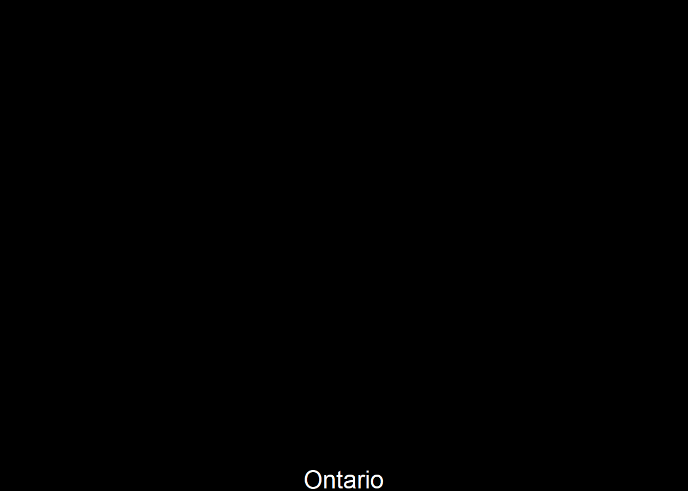

# Load Libraries ----------------------------------------------------------
suppressPackageStartupMessages( library(raster) )
suppressPackageStartupMessages( library(tidyverse) )
suppressPackageStartupMessages( library(ggridges) )
suppressPackageStartupMessages( library(rayshader) )
suppressPackageStartupMessages( library(gganimate) )
suppressPackageStartupMessages( library(sf) )
# Load Data ---------------------------------------------------------------
ont_s <- raster("PDEM_South.tif")
# ont_n <- raster(here::here("PDEM_North.tif"))Elevation Maps in R
Learn to create 3D and Ridgeline plots with an animation bonus.
In this post I show you how to create aesthetically pleasant and useful maps in R using ground elevation data.
Getting the Elevation Data in R
I got the elevation data from Geohub which provides the data for Ontario, Canada in the .tif format. The .tif file type can be easily imported in R using the raster package. If you want to use United States data, the elevatr R package can help with that.
I have downloaded 2 files for Ontario, one each for north and south Ontario, and then unzipped them. Let’s start by loading the libraries and importing the data.
Note that I used here::here() to get my file paths. Let’s see what’s in them:
ont_sclass : RasterLayer
dimensions : 31655, 55685, 1762708675 (nrow, ncol, ncell)
resolution : 30, 30 (x, y)
extent : 151020, 1821570, 11620380, 12570030 (xmin, xmax, ymin, ymax)
crs : +proj=lcc +lat_0=0 +lon_0=-85 +lat_1=44.5 +lat_2=53.5 +x_0=930000 +y_0=6430000 +datum=NAD83 +units=m +no_defs
source : PDEM_South.tif
names : PDEM_South # ont_nThey are clearly raster file types. You can see in the dimensions section that the number of cells (i.e. number of data points) is quite a large number for both layers. This means that if we try to plot these data with a typical RAM size, say 8GB, we’d have a bad time1. So, to create maps we’d need to decrease the size of these raster layers.
Before going to the next step, an important thing to note here is that the crs section above indicates that the units of the x, y and elevation coordinates are meters. The elevation is stored here under the names PDEM_South and PDEM_North in the two raster layers.
Slimming Down the Raster Data
The sampleRegular function from the raster package lets you take a sample of the original raster data by specifying the size argument. I experimented with different sizes, and was satisfied with size=50000, as it provided a good visual quality in the maps. The last argument here is asRaster that returns a raster data when TRUE.
Once we get a reduced raster data, we use the rayshader::raster_to_matrix() function to put all the elevation values in a 2D matrix where the 2 dimensions are x and y coordinates. Following shows the results (only the first 5 rows and columns for each layer):
ont_s_m <- ont_s %>%
raster::sampleRegular(ont_s, size=50000, asRaster=TRUE) %>%
rayshader::raster_to_matrix()
ont_s_m[1:5, 1:5] [,1] [,2] [,3] [,4] [,5]
[1,] NA 345.7590 343.8626 339.1616 NA
[2,] 341.2442 344.7713 351.7452 340.4780 326.4015
[3,] 346.9645 350.9861 349.9320 330.7751 336.5002
[4,] 355.3123 357.0607 337.0629 333.1272 338.1620
[5,] 358.0299 358.2284 334.0108 329.6138 329.7867# ont_n_m <- ont_n %>%
# raster::sampleRegular(ont_n, size=50000, asRaster=TRUE) %>%
# rayshader::raster_to_matrix()
#
# ont_n_m[1:5, 1:5]3D Raster Maps with Rayshader
We use the awesome rayshader package here to plot the raster map in 3D.
ont_s_m %>%
sphere_shade(texture = "desert") %>%
add_shadow(ray_shade(ont_s_m, zscale = 30), 0.5) %>%
add_shadow(ambient_shade(ont_s_m), 0) %>%
plot_3d(ont_s_m, zscale = 10, fov = 0,
theta = 0, zoom = 0.75, phi = 70,
windowsize = c(1000, 800),
solid=FALSE)
Sys.sleep(0.6)
render_snapshot(clear=T, title_text = "Ontario (South)",
filename="ont_s.png")
rgl::rgl.close()
## For some reason, rayshader is not rendering the snapshot
## of this map.
Creating Ridgeline Maps
Raster maps are beautiful but take long time to render. Another technique that can show the elevation data very effectively is a ridgeline plot. I was previously familiar with the ggridges package but was recently reminded of it when I saw the ridgeline plots app made by Andrei Kashcha. So, I decided to use elevation height in the ggridges::geom_ridgeline() function.
But a ridgeline plot uses 3 arguments, x, y, and height. So, to proceed, we need to extract these coordinates from the raster files. Again, we use the raster::sampleRegular function for slimming the data, but also use the xy=TRUE option to get the three coordinates:
## Sample 10000 values
df_s <- data.frame(sampleRegular(ont_s, 10000, xy=TRUE))
# df_n <- data.frame(sampleRegular(ont_n, 10000, xy=TRUE))
## Rename to 'elevation'
df_s <- df_s %>%
rename(elevation = PDEM_South)
# df_n <- df_n %>%
# rename(elevation = PDEM_North)
## Combine the two
df <- df_s#bind_rows(df_s, df_n)
head(df) x y elevation
1 157335 12563715 341.1952
2 169995 12563715 354.5818
3 182655 12563715 364.6080
4 195285 12563715 336.9090
5 207945 12563715 328.2127
6 220605 12563715 320.1098Note that elevation above is not completely NA (you are seeing the first 6 rows only).
My attempts to use
ggridges::geom_ridgeline()were not successful. Instead, the other function,ggridges::geom_density_ridgesis what can effectively generate the nice elevation lines for creating the 3D effect that Andrei showed. I learnt this from Travis M. White’s blogpost. I also found great tips for theming the map.
Plots
The data is ready now, back to making the maps. A first try:
ggplot() +
geom_density_ridges(data = df,
aes(x, y,
group=y,
height = elevation),
stat = "identity",
scale=20) +
theme_void() 
See the 3D effect?
The scale argument controls the overlap between the ridgelines. I experimented with different values and settled with 20.
Now with a dark theme:
ggplot() +
geom_density_ridges(data = df,
aes(x, y,
group=y,
height = elevation),
stat = "identity",
scale=20,
fill="black",
color="white") +
scale_x_continuous(name = "Ontario") +
theme_void() +
theme(
panel.background = element_rect(fill = "black"),
plot.background = element_rect(fill = "black"),
axis.title.x = element_text(colour = 'white',
size = 18))
For some reason, this reminded me of neon signs. So, I got an idea!
Animating the Ridgeline Map
Let’s animate the map with colors. For doing so, I create 2 more copies of the data df and then give one color to each (there may be a better way to do this). Then I use transition_reveal to color the lines turn by turn:
colos = rep(c("red", "yellow", "green"), each = nrow(df))
retro <- bind_rows(df, df, df) %>%
mutate(colorz = colos)
ani1 <- ggplot(data = retro ,
aes(x, y,
group=y,
height = elevation))+
geom_density_ridges(stat = "identity",
scale=20,
fill="black",
aes(color=colorz)) +
scale_x_continuous(name = "Ontario") +
theme_void() +
theme(
legend.position = "none",
panel.background = element_rect(fill = "black"),
plot.background = element_rect(fill = "black"),
axis.title.x = element_text(colour = 'white',
size = 18)) +
transition_states(colorz,
transition_length = 2,
state_length = 1)
ani1
Of course, we can also animate by x or y dimensions:
ani2 <- ggplot(data = df,
aes(x, y,
group=y,
height = elevation))+
geom_density_ridges(stat = "identity",
scale=8,
fill="black",
color = "white") +
scale_x_continuous(name = "Ontario") +
theme_void() +
theme(
legend.position = "none",
panel.background = element_rect(fill = "black"),
plot.background = element_rect(fill = "black"),
axis.title.x = element_text(colour = 'white',
size = 18)) +
transition_manual(x, cumulative = T) +
ease_aes('linear')
ani2
This ends the blogpost. I hope you’d find something useful here for your mapping needs.
Footnotes
Read the discussion here: https://stackoverflow.com/questions/61535383/r-runs-out-of-memory-plotting-data-frame-with-ggplot2↩︎